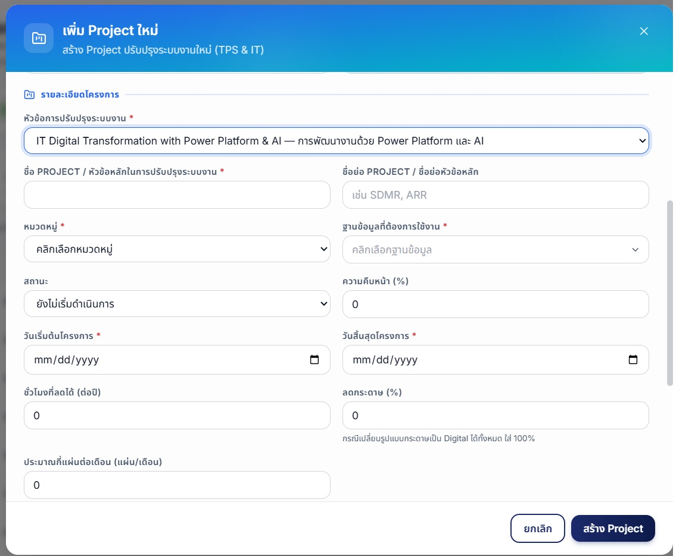
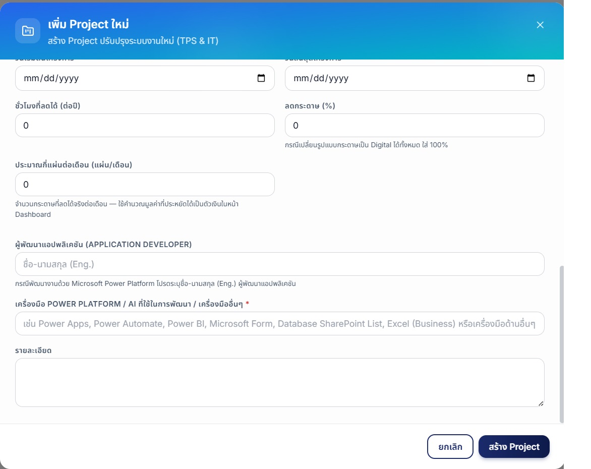
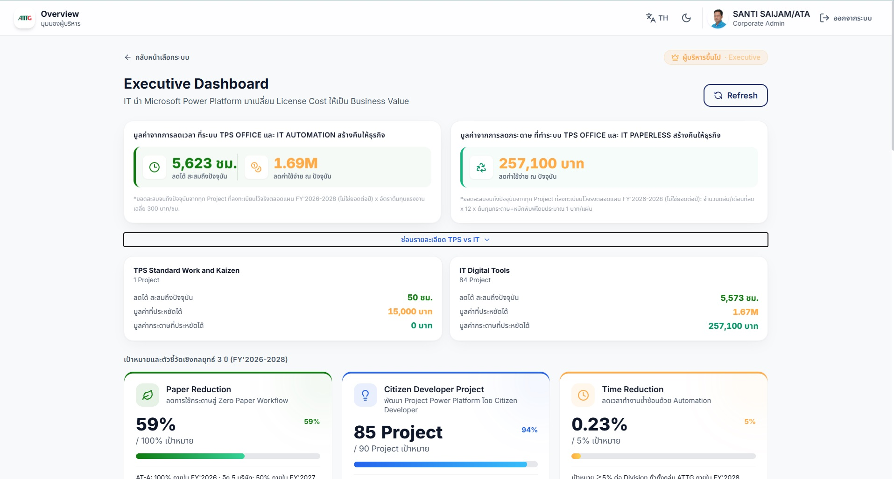
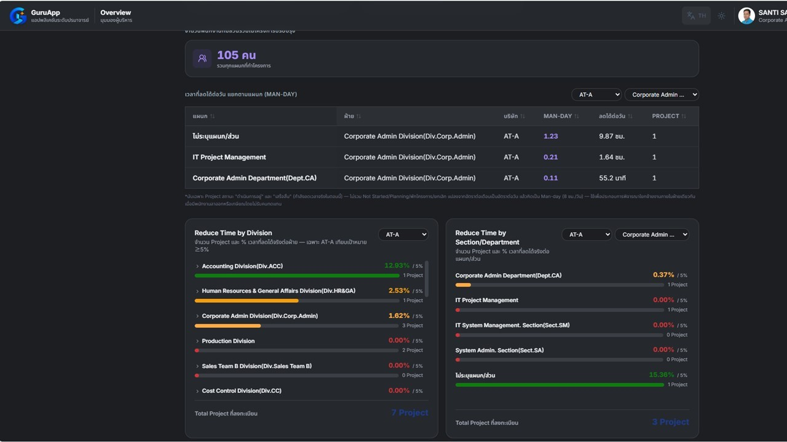

1ภาพรวมระบบOverview概要
TPS Office Digital Tools คือระบบกลางสำหรับติดตามความคืบหน้าโครงการ Digital Transformation ของกลุ่ม ATTG ตามแผน FY'2026–2028 TPS Office Digital Tools is the central system for tracking the progress of ATTG Group's Digital Transformation projects under the FY'2026–2028 plan. TPS Office Digital Toolsは、FY2026〜2028計画に基づくATTGグループのデジタルトランスフォーメーションプロジェクトの進捗を一元管理するシステムです。
Project Registration
ลงทะเบียนและติดตามโครงการที่ลดเวลาทำงานหรือลดการใช้กระดาษ Register and track projects that reduce work time or paper usage. 作業時間や紙の使用量を削減するプロジェクトを登録・追跡します。
Citizen Developer Training
บันทึกการอบรม Power Platform 3 ระดับ ตามรอบและไตรมาส Log Power Platform training across 3 levels, by cycle and quarter. Power Platformの研修（3レベル）を、サイクルおよび四半期ごとに記録します。
Power Champion
ทะเบียนบุคลากรที่เป็นกำลังสำคัญด้าน Automation ของแต่ละบริษัท A registry of key Automation personnel for each company. 各社のオートメーション推進の中核人材の登録簿です。
ข้อมูลทั้งหมดเชื่อมกับ Dashboard แบบเรียลไทม์ — ไม่ต้องรอสรุปรายเดือน เห็นความคืบหน้าได้ทันทีที่มีการอัปเดต ระบบมี 2 มุมมองสำหรับติดตามภาพรวม: Division Dashboard (GM.) และ Executive Dashboard (ผู้บริหารที่ต้องการดูภาพรวม) All data connects to the Dashboard in real time — no waiting for a monthly summary; progress is visible the moment it's updated. The system offers 2 overview views: Division Dashboard (for GMs) and Executive Dashboard (for executives who want the big picture). すべてのデータはダッシュボードにリアルタイムで連携されます — 月次集計を待つ必要はなく、更新と同時に進捗を確認できます。全体像を把握するための2つのビューがあります：Division Dashboard（GM.向け）とExecutive Dashboard（全体像を見たい経営層向け）。
เป้าหมายและตัวชี้วัดเชิงกลยุทธ์ 3 ปี 3-Year Strategic Goals & KPIs 3ヵ年戦略目標とKPI
Paper Reduction · Citizen Developer Project · Time Reduction
| เป้าหมายGoal目標 | 2026 — Foundation | 2027 — Expansion | 2028 — Value Realization |
|---|---|---|---|
| 📄 Paper Reduction | Pilot Paperless Process AT-A Zero Paper Initiative |
50% Paper Reduction SNF, NIC, ATFB, SATI, TEP |
50% Paper Reduction SNF, NIC, ATFB, SATI, TEP |
| 💡 Developer Project | ≥ 30 Projects AT-A |
Increase ≥ 30 Projects ATTG |
Increase ≥ 30 Projects ATTG |
| ⏱️ Time Reduction | ≥ 5% /Division AT-A |
≥ 5% /Division ATTG |
≥ 5% /Division ATTG |
| 🏆 Power Champions | 6 Persons ATTG |
6 Persons ATTG |
6 Persons ATTG |
| 🎓 Training | (H1-H2) = 50 Users ATTG |
= 50 Users ATTG |
= 50 Users ATTG |
2การเข้าสู่ระบบSign Inサインイン
ระบบใช้บัญชี Microsoft 365 (O365) ของบริษัทในการยืนยันตัวตน ผ่าน Single Sign-On เดียวกับที่ใช้ล็อกอิน Outlook/Teams ทุกวัน ไม่มีรหัสผ่านชุดที่สองให้จำเพิ่ม The system uses your company's Microsoft 365 (O365) account for authentication, through the same Single Sign-On you use to log into Outlook/Teams every day — no second password to remember. 本システムは、毎日Outlook/Teamsにログインする際と同じシングルサインオン（SSO）を通じて、会社のMicrosoft 365（O365）アカウントで認証を行います。新たに覚えるパスワードはありません。
-
เข้าเว็บไซต์
https://tpsit.attg.co.thจะเห็นหน้าแนะนำระบบพร้อมปุ่ม "ลงชื่อเข้าใช้ด้วย Microsoft 365" Go tohttps://tpsit.attg.co.th— you'll see the introduction page with a "Sign in with Microsoft 365" button.https://tpsit.attg.co.thにアクセスすると、「Microsoft 365でサインイン」ボタンのある紹介ページが表示されます。 -
กดปุ่มแล้วเลือกบัญชี O365 ของบริษัท (เช่น
0158-ATA@ap01.aisingroup.com) จากหน้า "Pick an account" Click the button and select your company O365 account (e.g.0158-ATA@ap01.aisingroup.com) from the "Pick an account" page. ボタンをクリックし、「アカウントの選択」画面から会社のO365アカウント（例：0158-ATA@ap01.aisingroup.com）を選択します。 - ระบบอาจพาไปหน้า Login ของ AISIN (SSO) ให้กรอก Username/Password บัญชีเดิมที่ใช้ล็อกอินเครื่องทุกวัน You may be taken to the AISIN Login page (SSO) — enter the same Username/Password you use to log into your computer every day. AISINのログインページ（SSO）に移動する場合があります。毎日パソコンにログインする際と同じユーザー名・パスワードを入力してください。
- เมื่อยืนยันตัวตนสำเร็จ ระบบจะพาเข้าหน้าหลักอัตโนมัติ — สิทธิ์การใช้งานจะถูกกำหนดตามอีเมลที่ login โดยอัตโนมัติ Once authenticated, you'll be taken to the home page automatically — your access rights are determined automatically based on the email you logged in with. 認証が完了すると、自動的にホームページに移動します — 利用権限は、ログインしたメールアドレスに基づいて自動的に設定されます。

images/01-login-landing.jpg
images/02-login-account-picker.jpg
images/03-login-aisin-sso.jpg3หน้าหลัก (Landing)Home (Landing)ホーム（ランディング）
หน้าแรกหลังล็อกอิน แสดงมูลค่าที่ระบบสร้างคืนให้ธุรกิจ (สะสมถึงปัจจุบัน) พร้อมทางเข้าสู่ 3 ส่วนหลัก The first page after signing in — shows the value the system has returned to the business (cumulative to date), along with entry points to the 3 main sections. サインイン後に最初に表示されるページ — システムが事業にもたらした価値（現在までの累計）と、3つの主要セクションへの入り口を表示します。

images/04-landing-home.jpgApps
สำหรับเจ้าหน้าที่ผู้ Update ข้อมูล — จัดการ Project, Citizen Developer และงานบริหารระบบ (มีทางลัด "ลงทะเบียนสร้าง Project ใหม่") For staff who update data — manage Projects, Citizen Developers, and system administration (includes a "Register a New Project" shortcut). データ更新担当者向け — プロジェクト、市民開発者、システム管理業務を管理します（「新規プロジェクトを登録」ショートカット付き）。
เข้าใช้งาน →Enter →利用する →Dashboard
สำหรับผู้จัดการทั่วไป (GM.) — ติดตามความคืบหน้าของแผนก/บริษัทตัวเอง เทียบกับเป้าหมายของแผน For General Managers (GM.) — track your own department/company's progress against the plan's targets. ゼネラルマネージャー（GM.）向け — 自部門・自社の進捗を計画目標と比較して追跡します。
เข้าใช้งาน →Enter →利用する →Overview
สำหรับผู้บริหารที่ต้องการดูภาพรวมทั้งกลุ่ม ATTG พร้อมมูลค่าที่ประหยัดได้ For executives who want a group-wide ATTG overview, including the value saved. ATTGグループ全体の概況と削減できた価値を確認したい経営層向けです。
เข้าใช้งาน →Enter →利用する →4Dashboard & KPI (ฝั่ง Apps)Dashboard & KPI (Apps side)ダッシュボード＆KPI（Apps側）
หน้าแรกของฝั่ง "Apps" (เมนูซ้าย) — สรุปภาพรวมและตัวชี้วัดเชิงกลยุทธ์ 3 ปีในที่เดียว ก่อนเข้าไปจัดการข้อมูลรายหน้า The first page of the "Apps" side (left menu) — a summary overview and 3-year strategic KPIs in one place, before you go into managing data on individual pages. 「Apps」側（左メニュー）の最初のページ — 各ページでデータを管理する前に、概要と3ヵ年の戦略KPIを一箇所で確認できます。

images/05-dashboard-kpi.jpg
images/06-dashboard-charts.jpg
images/07-dashboard-division-champions.jpg
images/08-dashboard-training-trend.jpg5Project Registration
ใช้ลงทะเบียนโครงการ Automation ที่ลดเวลาทำงานหรือลดการใช้กระดาษ — มีตัวกรองบริษัท/แผนก/สถานะ/หมวดหมู่ และช่องค้นหา Used to register Automation projects that reduce work time or reduce paper usage — includes company/department/status/category filters and a search box. 作業時間を削減または紙の使用を削減するオートメーションプロジェクトを登録するページです — 会社／部門／ステータス／カテゴリのフィルターと検索ボックスがあります。

images/09-projects-list.jpg5.1 ลงทะเบียน Project ใหม่5.1 Register a New Project5.1 新規プロジェクトの登録
- กดปุ่ม "+ เพิ่ม Project" มุมขวาบน Click the "+ Add Project" button at the top right. 右上の「＋プロジェクトを追加」ボタンをクリックします。
- กรอกส่วน "ข้อมูลโครงการ": ชื่อ Project, ชื่อย่อ, บริษัท, หมวดหมู่ (ลดเวลา/ลดกระดาษ), แผนก/ส่วน/ฝ่าย, และเลือกว่าต้องการใช้ฐานข้อมูล SharePoint List ส่วนกลางหรือไม่ Fill in the "Project Information" section: Project name, short name, company, category (reduce time / reduce paper), department/section/division, and whether you need a central SharePoint List database. 「プロジェクト情報」欄に入力します：プロジェクト名、略称、会社、カテゴリ（時間削減／紙削減）、部門／セクション／事業部、共通SharePointリストデータベースの要否。
- ส่วน "ผู้เกี่ยวข้อง" — ผู้จัดสร้าง (เติมชื่อผู้ล็อกอินอัตโนมัติ) และผู้อนุมัติระดับ Section/Department "Stakeholders" section — Creator (auto-filled with the signed-in user's name) and Section/Department-level approvers. 「関係者」欄 — 作成者（サインインユーザー名が自動入力）とセクション／部門レベルの承認者。
- ส่วน "สถานะและกำหนดการ" — สถานะ, % ความคืบหน้า, วันเริ่มต้น/สิ้นสุดโครงการ "Status & Schedule" section — status, % progress, project start/end dates. 「ステータスとスケジュール」欄 — ステータス、進捗率、プロジェクトの開始日／終了日。
- ส่วน "ผลลัพธ์และเครื่องมือ" — ชั่วโมงที่ลดได้ (ต่อปี) เว้นว่างไว้ก่อนได้ ไม่บังคับกรอก (มาใส่ทีหลังเมื่อทราบตัวเลขจริงก็ได้) ส่วน % กระดาษที่ลด + จำนวนแผ่น/เดือน ยังคงจำเป็นเมื่อเลือกหมวดหมู่ "ยกเลิกการใช้กระดาษ" ระบุเครื่องมือ Power Platform/AI ที่ใช้พัฒนา (หรือเครื่องมืออื่นๆ) และชื่อผู้พัฒนาแอปพลิเคชัน (Application Developer) หากพัฒนาด้วย Power Platform "Outcome & Tools" section — Hours Saved (per year) can now be left blank (not required — fill it in later once the real number is known); "% Paper Reduced" + sheets/month is still required for the "eliminate paper" category. Specify the Power Platform/AI tools used for development (or other tools), and the Application Developer's name if it was built with Power Platform. 「成果とツール」欄 — 「削減時間（年間）」は空欄のままでも登録できます（必須ではありません。実数が分かってから後で入力できます）。「紙削減率」＋月間枚数は「紙の使用廃止」カテゴリの場合は引き続き必須です。開発に使用したPower Platform／AIツール（またはその他のツール）と、Power Platformで開発した場合はアプリケーション開発者名も記入します。
- กด "สร้าง Project" Click "Create Project". 「プロジェクトを作成」をクリックします。
ฟอร์มจะเริ่มด้วยข้อมูลพนักงาน/หน่วยงาน (กรอกอัตโนมัติให้บางส่วน) ตามด้วย "หัวข้อการปรับปรุงระบบงาน" ที่ต้องเลือกก่อน — ฟิลด์ที่เหลือจะเปลี่ยนไปตามหัวข้อที่เลือก ดังตัวอย่างด้านล่าง The form starts with employee/unit information (some fields auto-filled), followed by the required "Work Type" — the rest of the fields change depending on what's selected, as shown below. フォームはまず従業員／部署情報（一部自動入力）から始まり、次に必須の「改善テーマ」を選択します — 残りの項目は選択内容に応じて以下のように変化します。

images/11-projects-add-form-1.jpg
images/12-projects-add-form-2.jpg
images/12-projects-add-form-3.jpg
images/12-projects-add-form-4.jpg5.2 Export ข้อมูลเป็น Excel5.2 Export Data to Excel5.2 Excelへのデータエクスポート
กดปุ่ม "Export Data" มุมขวาบนของหน้า — ระบบจะดาวน์โหลดไฟล์ .xlsx ของข้อมูล Project ทั้งหมดตามตัวกรองที่เลือกอยู่ (ตั้งชื่อไฟล์อัตโนมัติตามวันที่ เช่น TPS_Projects_2026-08-02.xlsx)
Click the "Export Data" button at the top right of the page — the system will download an .xlsx file of all Project data matching the currently selected filters (the filename is automatically dated, e.g. TPS_Projects_2026-08-02.xlsx).
ページ右上の「Export Data」ボタンをクリックすると、現在選択中のフィルターに一致する全プロジェクトデータの.xlsxファイルがダウンロードされます（ファイル名には日付が自動的に付与されます。例：TPS_Projects_2026-08-02.xlsx）。

images/10-projects-export-dialog.jpgปุ่มนี้ใช้งานได้เฉพาะบางบัญชีเท่านั้น (ดูรายชื่อในหมวด สรุปสิทธิ์การใช้งาน) — ผู้ใช้อื่นจะเห็นปุ่มเป็นสีเทา กดไม่ได้ This button only works for certain accounts (see the list in the Access Rights Summary section) — other users will see the button greyed out and unclickable. このボタンは特定のアカウントでのみ使用できます（詳細はアクセス権限の概要セクションを参照）。それ以外のユーザーにはグレーアウトされ、クリックできません。
6Citizen Developer Training
บันทึกประวัติการอบรม Power Platform ของพนักงานทั้ง 6 บริษัทในกลุ่ม Log Power Platform training records for employees across all 6 companies in the group. グループ内6社の従業員のPower Platform研修履歴を記録します。
| ระดับLevelレベル | หลักสูตรCourseコース | จำนวนรอบNumber of Rounds回数 |
|---|---|---|
| L1 · Beginner | Smart Paperless Process Builder | 4 รอบ (Q3'26 – Q1-Q2'28)4 rounds (Q3'26 – Q1-Q2'28)4回（Q3'26～Q1-Q2'28） |
| L2 · Intermediate | Business Automation App Builder | 3 รอบ (Q4'26 – Q1-Q2'28)3 rounds (Q4'26 – Q1-Q2'28)3回（Q4'26～Q1-Q2'28） |
| L3 · Advanced | AI-Assisted Web Application Development | 2 รอบ (Q1-Q2'27 – Q1-Q2'28)2 rounds (Q1-Q2'27 – Q1-Q2'28)2回（Q1-Q2'27～Q1-Q2'28） |

images/13-training-list.jpg6.1 เพิ่มประวัติการอบรม6.1 Add Training Records6.1 研修履歴の追加
- กดปุ่ม "+ เพิ่มประวัติการอบรม" Click the "+ Add Training Record" button. 「＋研修履歴を追加」ボタンをクリックします。
- เลือกบริษัทก่อน — ระบบจะกรองรายชื่อพนักงาน/แผนก/ส่วน/ฝ่าย ให้ตรงกับบริษัทนั้นโดยอัตโนมัติ (ข้อมูลมาจาก SharePoint Employee list จริง) Select the company first — the system automatically filters the employee/department/section/division lists to match that company (data comes from the real SharePoint Employee list). 先に会社を選択します — 従業員／部門／セクション／事業部のリストが、その会社に合わせて自動的に絞り込まれます（実際のSharePoint Employeeリストのデータ）。
- เลือกชื่อ Course แล้วเลือก "รอบที่" — ตัวเลือกรอบจะเปลี่ยนตามหลักสูตรที่เลือก (แต่ละหลักสูตรมีจำนวนรอบไม่เท่ากัน) Select the Course name, then select the "Round" — the round options change based on the selected course (each course has a different number of rounds). コース名を選択し、「回」を選択します — 選択したコースによって回の選択肢が変わります（コースごとに回数が異なります）。
- ระบบจะโชว์กล่องรายละเอียดหลักสูตร (ระดับ, เครื่องมือหลัก, เป้าหมาย, คุณสมบัติผู้เข้าอบรม) ให้ตรวจสอบก่อนกรอกต่อ The system shows a course details box (level, key tools, goal, eligibility) for you to review before continuing. コース詳細ボックス（レベル、主なツール、目標、受講対象者）が表示されるので、続行前に確認してください。
- กรอกวันที่เริ่ม/ถึงวันที่, เวลาเริ่ม/สิ้นสุด, ประเภท+ชื่อวิทยากร, ชื่อสถาบัน, รูปแบบการอบรม/สถานที่, ระยะเวลา Fill in the start/end date, start/end time, instructor type + name, institution name, training format/location, and duration. 開始日／終了日、開始時刻／終了時刻、講師種別＋講師名、機関名、研修形式／場所、期間を入力します。
- กด "บันทึก" — ระบบจะเคลียร์เฉพาะข้อมูลตัวบุคคล (รหัสพนักงาน, ชื่อ) ส่วนข้อมูลรอบ/หลักสูตร/วิทยากรจะคงไว้ ช่วยคีย์คนถัดไปในคอร์สเดียวกันได้เร็วขึ้น Click "Save" — the system only clears the individual's data (Employee ID, name), while the round/course/instructor information stays filled in, making it faster to enter the next person in the same course. 「保存」をクリックします — 個人情報（社員番号、氏名）のみクリアされ、回／コース／講師の情報は保持されるため、同じコースの次の受講者を素早く入力できます。

images/14-training-learners-by-division.jpg
images/15-training-table.jpg
images/training-add-form-1.jpg
images/training-add-form-2.jpg6.2 นำเข้าจาก Excel6.2 Import from Excel6.2 Excelからのインポート
สำหรับกรอกทีละหลายรายการ กดปุ่ม "Template" เพื่อดาวน์โหลดไฟล์ตัวอย่างก่อน กรอกข้อมูลตามคอลัมน์ในไฟล์ แล้วกด "อัปโหลดจาก Excel" เพื่อเลือกไฟล์ .xlsx/.xls นำเข้าทีเดียว
For entering many records at once, click the "Template" button to first download a sample file. Fill in the data according to the file's columns, then click "Upload from Excel" to select an .xlsx/.xls file and import it all at once.
複数件をまとめて入力する場合は、まず「Template」ボタンをクリックしてサンプルファイルをダウンロードします。ファイルの列に従ってデータを入力し、「Excelからアップロード」をクリックして.xlsx／.xlsファイルを選択すると、一括でインポートできます。

images/training-excel-upload-dialog.jpg7Power Champion
ทะเบียนบุคลากรที่ได้รับการแต่งตั้งเป็น Power Champion ของแต่ละบริษัท — เป้าหมาย 6 คน/บริษัท/ปี รวม 18 คนภายใน FY'2028 Registry of personnel appointed as Power Champions for each company — target of 6 people/company/year, 18 people total within FY'2028. 各社でPower Championに任命された人材の登録簿 — 目標は年間6名／会社、FY2028までに合計18名。

images/16-champions-list-top.jpg
images/17-champions-list-table.jpgคุณสมบัติและเงื่อนไขQualifications & Conditions資格要件と条件
- Qualifications: สามารถสร้างหรือพัฒนางานโดยใช้เครื่องมือ Power Platform (MS Forms, Power Apps, Power Automate, Power BI, Database SharePoint List หรือ Excel) Qualifications: Able to build or improve work using Power Platform tools (MS Forms, Power Apps, Power Automate, Power BI, SharePoint List database, or Excel). Qualifications：Power Platformツール（MS Forms、Power Apps、Power Automate、Power BI、SharePointリストデータベース、Excel）を使用して業務を構築・改善できること。
- Conditions: นำ Power Platform มาใช้พัฒนางานได้อย่างน้อย 1 Project (ลดเวลางาน, เพิ่มคุณภาพและกระบวนการทำงาน, ลดการใช้กระดาษด้วยระบบ Paperless) Conditions: Has applied Power Platform to at least 1 Project (reducing work time, improving quality and process, or reducing paper use via a Paperless system). Conditions：Power Platformを活用し、少なくとも1件のプロジェクトを実施していること（作業時間の削減、品質・プロセスの向上、またはペーパーレス化による紙使用の削減）。
- กดปุ่ม "+ เพิ่ม Power Champion" Click the "+ Add Power Champion" button. 「＋パワーチャンピオンを追加」ボタンをクリックします。
- กรอกบริษัท/รหัสพนักงาน/ชื่อ/แผนก/ส่วน/ฝ่าย (กรองตามบริษัทเหมือนหน้า Training) Fill in company/Employee ID/name/department/section/division (filtered by company, same as the Training page). 会社／社員番号／氏名／部門／セクション／事業部を入力します（Trainingページと同様に会社で絞り込まれます）。
- เลือก Project Value (คุณค่าที่โดดเด่นของโครงการ), ผู้อนุมัติ, ปีที่ได้รับตำแหน่ง (FY) Select the Project Value (the project's standout value), approver, and the year appointed (FY). Project Value（プロジェクトの特筆すべき価値）、承認者、任命年度（FY）を選択します。
- กรอกวันที่ได้รับคัดเลือก และรายละเอียดโดยสังเขป แล้วกดบันทึก Fill in the selection date and a brief description, then click Save. 選出日と概要を入力し、保存をクリックします。

images/18-champions-add-form.jpg8Division Dashboard
มุมมองสำหรับหัวหน้าแผนก (Section Manager) — ติดตามความคืบหน้าเทียบเป้าหมาย เลือกดูเฉพาะบริษัท/ฝ่ายของตัวเอง หรือทั้งกลุ่มก็ได้ A view for Section Managers — track progress against targets, choosing to view just your own company/division or the whole group. セクションマネージャー向けのビュー — 目標に対する進捗を追跡し、自分の会社／事業部のみ、またはグループ全体を選んで表示できます。

images/23-section-dashboard-division-filter.jpg
images/22-section-dashboard.jpgตัวกรองบริษัท / ฝ่ายCompany / Division Filter会社／事業部フィルター
เลือก "ทั้งหมด (All)" เพื่อดูภาพรวมบริษัท หรือเลือกฝ่ายเฉพาะเจาะจง — รายชื่อฝ่ายเป็นข้อมูลจริงจาก SharePoint ของบริษัทนั้นๆ Select "All" to see the company overview, or select a specific division — the division list is real data from that company's SharePoint. 「すべて（All）」を選択すると会社の概況を確認でき、特定の事業部を選択することもできます — 事業部リストはその会社の実際のSharePointデータです。
5 ตัวชี้วัดหลัก5 Key Metrics5つの主要指標
Paper Reduction · Citizen Developer Project · Time Reduction · Power Champions · Training — แต่ละการ์ดมีบรรทัดที่มา (footnote) อธิบายวิธีคำนวณกำกับไว้ Paper Reduction · Citizen Developer Project · Time Reduction · Power Champions · Training — each card has a source line (footnote) explaining how it's calculated. Paper Reduction · Citizen Developer Project · Time Reduction · Power Champions · Training — 各カードには計算方法を説明する出典（footnote）が記載されています。
9Executive Dashboard
ภาพรวมระดับผู้บริหาร ครอบคลุมทั้งกลุ่ม ATTG พร้อมมูลค่าที่ระบบสร้างคืนให้ธุรกิจ An executive-level overview covering the whole ATTG Group, along with the value the system has returned to the business. ATTGグループ全体を網羅する経営層向けの概況と、システムが事業にもたらした価値です。

images/24-executive-overview-top.jpg
images/24b-executive-overview-tps-vs-it.jpg
images/25-executive-overview-champions-training-charts.jpg
images/26-executive-overview-division-section.jpg- Reduce Time by Division และ Reduce Time by Section/Department อยู่คู่กันบนสุดของหน้า (ใต้การ์ดเป้าหมายเชิงกลยุทธ์) — Division เลือกบริษัทได้, Section/Department เลือกบริษัท+ฝ่ายของตัวเองแยกต่างหาก ไล่เฉดสีตามความคืบหน้า (แดง = ยังไม่เริ่ม, ส้ม/เหลือง = กำลังไป, เขียว = ถึงเป้าหมาย) Reduce Time by Division and Reduce Time by Section/Department sit side by side at the top of the page (below the Strategic Goals cards) — Division lets you pick a company, Section/Department has its own separate company+division pickers. Colors are graded by progress (red = not started, orange/yellow = in progress, green = target reached). Reduce Time by DivisionとReduce Time by Section/Departmentはページ最上部（戦略目標カードの下）に並んで表示されます — Divisionは会社を選択でき、Section/Departmentは独自の会社＋事業部選択があります。進捗に応じて色分けされます（赤＝未着手、オレンジ／黄＝進行中、緑＝目標達成）。
- แต่ละแถวใน Reduce Time by Division กดได้ (มีลูกศร ▸) เพื่อขยายดูรายละเอียดแผนก/ส่วนภายในฝ่ายนั้นแบบ inline โดยไม่ต้องสลับไปการ์ดอื่น Each row in Reduce Time by Division is clickable (has a ▸ arrow) to expand in place and show that Division's own Department/Section breakdown, without switching to the other card. Reduce Time by Divisionの各行はクリック可能（▸マーク付き）で、その場で展開してそのDivisionの部門／課の内訳を表示できます。別のカードに切り替える必要はありません。
- Project ที่ไม่ได้กรอกทั้งแผนกและส่วนไว้ จะรวมอยู่ในแถว "ไม่ระบุแผนก/ส่วน" แทนที่จะหายไปจากรายการ — ยอดรวมแถวจึงตรงกับ "Total Project" เสมอ Projects with neither Department nor Section filled in are grouped into an "Unspecified" row instead of disappearing from the list — so the row totals always match the "Total Project" figure. 部門も課も未入力のプロジェクトは、一覧から消えるのではなく「未指定」行にまとめられます — そのため行の合計は常に「Total Project」と一致します。
- มูลค่าที่ทำระบบ Automation / Paperless สร้างคืนให้ธุรกิจ (สะสมถึงปัจจุบัน — ไม่ใช่ยอดต่อปี) The value the Automation / Paperless systems have returned to the business (cumulative to date — not an annual figure). AutomationとPaperlessが事業にもたらした価値（現在までの累計 — 年間値ではありません）。
- กราฟเปรียบเทียบแต่ละบริษัท: จำนวน Project, Power Champions, Training Progress Charts comparing each company: number of Projects, Power Champions, Training Progress. 各社を比較するグラフ：プロジェクト数、パワーチャンピオン数、Training Progress。
- สามารถกด Refresh มุมขวาบนเพื่อดึงข้อมูลล่าสุดได้ตลอดเวลา You can click Refresh at the top right at any time to pull the latest data. いつでも右上のRefreshをクリックして最新データを取得できます。
10Administration
เฉพาะบัญชีที่มีสิทธิ์ Admin เท่านั้นที่เปิดเมนูนี้ได้ Only accounts with Admin rights can open this menu. この管理メニューを開けるのはAdmin権限を持つアカウントのみです。
Manage Data
ทางลัดไปหน้าจัดการ Project / Training / Power Champion Shortcuts to the Project / Training / Power Champion management pages. Project／Training／Power Championの管理ページへのショートカット。
Access & Permissions
รายชื่อบัญชีที่มีสิทธิ์ Admin / Export / เข้าเมนูจำกัด (ข้อมูลจริง อัปเดตอัตโนมัติ) List of accounts with Admin / Export / restricted menu access rights (real data, updated automatically). Admin／Export／制限メニューへのアクセス権を持つアカウントの一覧（実データ、自動更新）。
Database
สถานะฐานข้อมูลแบบเรียลไทม์ และรายชื่อตารางพร้อมจำนวนแถวจริง Real-time database status, plus a list of tables with real row counts. データベースのリアルタイムステータスと、実際の行数を含むテーブル一覧。
Estimated Monthly Cost
ประมาณการค่าใช้จ่ายระบบ ณ ปัจจุบัน เทียบกับทางเลือกอื่น Current system cost estimate, compared against alternative options. 現在のシステム費用見積もりと、他の選択肢との比較。
11Settings
Theme
สลับ Dark Mode และเลือก Accent Color (Blue/Indigo/Teal/Green/Amber/Rose) ที่ใช้ทั่วทั้งระบบทันที Toggle Dark Mode and choose an Accent Color (Blue/Indigo/Teal/Green/Amber/Rose) that applies across the whole system instantly. ダークモードの切り替えと、システム全体に即座に反映されるアクセントカラー（Blue／Indigo／Teal／Green／Amber／Rose）の選択。
Language
สลับภาษาการแสดงผล (ไทย/English/日本語) ได้ทันทีทั่วทั้งระบบ Switch the display language (Thai/English/Japanese) instantly across the whole system. 表示言語（タイ語／English／日本語）をシステム全体で即座に切り替え。
Master Data Sync
สถานะการซิงก์ข้อมูลจาก SharePoint (Employees, PM-UP, Departments, Sections, Divisions) พร้อมเวลาซิงก์ล่าสุด Sync status of data from SharePoint (Employees, PM-UP, Departments, Sections, Divisions), including the last sync time. SharePointからのデータ同期状況（Employees、PM-UP、Departments、Sections、Divisions）と、最終同期日時。
12สรุปสิทธิ์การใช้งานAccess Rights Summaryアクセス権限の概要
| สิทธิ์Permission権限 | ทำอะไรได้Accessできること |
|---|---|
| Full Admin | แก้ไข/ลบข้อมูลของใครก็ได้ ไม่จำกัดแค่ที่ตัวเองสร้าง Can edit/delete anyone's records, not limited to what they created themselves. 自分が作成したものに限らず、誰のデータでも編集・削除できます。 |
| Restricted Nav Access | เปิดเมนู Citizen Developer Training / Power Champion / Administration ได้ Can open the Citizen Developer Training / Power Champion / Administration menus. Citizen Developer Training／Power Champion／Administrationメニューを開けます。 |
| Excel Export | กดปุ่ม Export Data บนหน้า Project Registration ได้ Can click the Export Data button on the Project Registration page. Project RegistrationページのExport Dataボタンを使用できます。 |
| ผู้ใช้ทั่วไปGeneral User一般ユーザー | แก้ไข/ลบได้เฉพาะรายการที่ตัวเองสร้างเท่านั้น Can only edit/delete records they created themselves. 自分が作成したレコードのみ編集・削除できます。 |
13คำถามที่พบบ่อยFAQよくある質問
ทำไมข้อมูลบางหน้าโหลดช้าตอนเปิดครั้งแรกของวัน? Why does some data load slowly the first time I open it each day? なぜ、1日の最初に開いたときに一部のページの読み込みが遅いのですか？
ฐานข้อมูลเป็นแบบ Serverless จะพักการทำงาน (Pause) อัตโนมัติเมื่อไม่มีคนใช้นาน 60 นาที การเปิดครั้งแรกหลังพักจึงอาจช้ากว่าปกติเล็กน้อย ลอง Refresh อีกครั้งถ้าข้อมูลดูไม่ครบ The database is Serverless and automatically pauses when unused for 60 minutes. The first load after a pause may therefore be a bit slower than usual — try refreshing again if the data looks incomplete. データベースはServerless方式で、60分間操作がないと自動的に一時停止します。そのため、一時停止後の最初の読み込みは通常より少し時間がかかる場合があります。データが不完全に見える場合は、もう一度更新してみてください。
ทำไมแก้ไขข้อมูลแล้วดูเหมือนไม่บันทึก? Why does it look like my edits weren't saved? データを編集しても保存されていないように見えるのはなぜですか？
อาจเกิดจาก session หมดอายุหลังไม่ได้ใช้งานนาน — ลอง Refresh หน้าเว็บแล้วลองแก้ไขอีกครั้ง ระบบจะแจ้งเตือนหากบันทึกไม่สำเร็จ This may be due to your session expiring after a period of inactivity — try refreshing the page and editing again. The system will notify you if a save fails. しばらく操作がなくセッションが切れた可能性があります — ページを更新してもう一度編集してみてください。保存に失敗した場合はシステムが通知します。
ข้อมูลบริษัท/แผนก/ฝ่ายผิด แก้ไขที่นี่ได้ไหม? The company/department/division data is wrong — can I fix it here? 会社／部門／事業部のデータが間違っています。ここで修正できますか？
แก้ไม่ได้โดยตรงในระบบนี้ — ข้อมูลเหล่านี้ซิงก์มาจาก SharePoint Employee list ของบริษัททุกวัน ต้องแก้ที่ต้นทางแล้วรอรอบซิงก์ถัดไป You can't edit it directly in this system — this data syncs daily from the company's SharePoint Employee list. It must be fixed at the source, then wait for the next sync cycle. 本システムで直接修正することはできません — これらのデータは会社のSharePoint Employeeリストから毎日同期されています。元データを修正し、次の同期を待つ必要があります。
อยากเพิ่มประวัติการอบรมทีละหลายสิบคน ต้องกรอกทีละคนไหม? I want to add training records for dozens of people at once — do I have to enter them one by one? 何十人分もの研修履歴を一度に追加したいのですが、1人ずつ入力する必要がありますか？
ไม่ต้อง — ใช้ปุ่ม "Template" ดาวน์โหลดไฟล์ตัวอย่าง กรอกใน Excel แล้วอัปโหลดกลับเข้าระบบทีเดียวได้ (ดูหมวด 6.2) No — use the "Template" button to download a sample file, fill it in using Excel, then upload it back into the system all at once (see section 6.2). いいえ — 「Template」ボタンでサンプルファイルをダウンロードし、Excelで入力してから、一括でシステムにアップロードできます（6.2をご覧ください）。